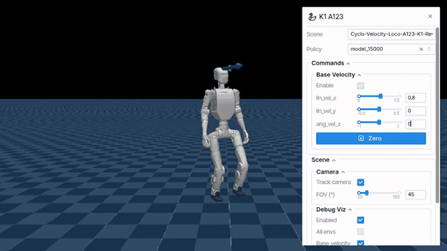
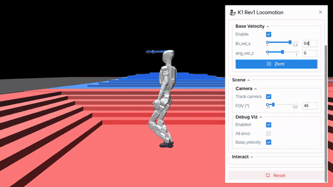

Walking and blind stair walking for the ROBOTIS AI Sapiens K1, running live in your browser
The walking policy for the K1 Rev1 humanoid covers flat-ground walking at variable speed and turning. It follows forward velocity from 0 to 1.5 m/s, lateral velocity up to ±0.5 m/s, and yaw rate up to ±1 rad/s, including turning in place. It was trained with MJLab on top of cyclo_mjlab.
A second policy adds blind stair walking. Without any terrain sensing, it walks up and down stairs with steps from 2 to 10 cm at 0.3 to 0.8 m/s, and it keeps the flat-ground commands above.
The physics and the policy run on your device, so nothing needs to be installed. Loading takes a few seconds on first visit.


Recorded from the demo above.